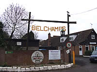
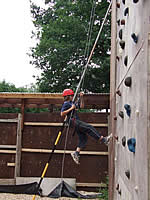
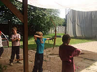
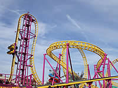
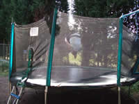

|
1st Letty Green Cubs
1st Letty Green Cubs
Cub Scouts are young people aged between 8 and 10 ½ years old.
They belong to the second Section in the Scouting Family.
They move to the third Section, Scouts, between 10 & 10 ½ years.
As a pack we play loads of games and do a lot of badge work. We take part in all the District Events and also go camping as often as possible. We do fund raising for our own Group and for Charity
The 1st Letty Green Cub Scout Pack meets at
Cowper Hall, Hertingfordbury Cowper Primary School, Birch Green, SG14 2LR
on Thursday evenings, during term time, between 7.00 pm and 8.30 pm
If you have a child who is interested in joining our Cub Pack, then contact us at the addresse below, if they are not yet 8 then you can add their name to our waiting list.
THE CUB SCOUT LAW
CUB SCOUTS ALWAYS DO THEIR BEST,
THINK OF OTHERS BEFORE THEMSELVES,
AND DO A GOOD TURN EVERY DAY!
THE CUB SCOUT PROMISE
'I PROMISE THAT I WILL DO MY BEST
TO DO MY DUTY TO GOD AND TO THE QUEEN
TO HELP OTHER PEOPLE
AND TO KEEP THE CUB SCOUT LAW'
Back to top
All images on this site have been approved by the appropriate leaders and permission to show the images has been obtained from parents and guardians wherever possible. If you are the parent or guardian of a child whose image is shown on this website and you would like it to be removed, please contact us on webmaster@1stlettygreen.org.uk with details of the location of the image on the website, and we will remove it.
.gif) |
 |  |
|  |  |  |
 |
 |
 |
|  |  |
 |
 |
 |
 |
 |
 |
©Lemsford Online 2007 | created and maintained by www.colneywebservices.co.uk